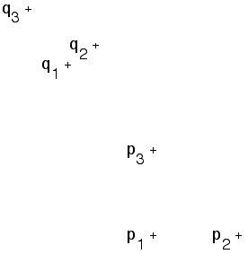

Finding IFS Rules from Images of Points
Exercise 2 Answer

Take p
1
= (0,0), p
2
= (1,0), and p
3
= (0,1).
One set of measurements is q
1
= (-1,2), q
2
= (-0.67,2.23), and q
3
= (-1.46,2.66).
This gives r = 0.4, s = 0.8, theta = 35, phi = 35, e = -1, f = 2
Return to
Exercises
.